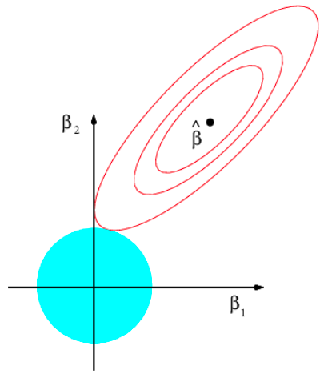
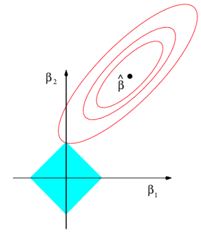

1. Aprendizaje automático (el modelo lineal regularizado)
Técnicas avanzadas de predicción en negocios
Prof.Juan D. Montoro-Pons | 2025/26
Introducción
El modelo lineal simple
El modelo lineal simple permite realizar predicciones para una respuesta \(y\) a partir de un predictor \(x\) a partir de una relación lineal entre ambos
La respuesta es la suma de un componente sistemático al que se añade variabilidad aleatoria o ruido (\(\epsilon\)):
\[ y = \underbrace{\beta_0 + \beta_1 x}_{\textrm{parte sistemática}} +\underbrace{\epsilon}_{\textrm{ruido}}\]
- Las predicciones para la respuesta (\(\hat{y}_i\)) se generan utilizando la parte sistemática:
\[\hat{y}_i= \hat{\beta}_0+\hat{\beta}_1 x_i\]
- ¿Como obtenemos la estimación de los parámetros o coeficientes del modelo \(\beta_0\) y \(\beta_1\)? Por mínimos cuadrados ordinarios, seleccionamos los valores \(\hat{\beta}_0\),\(\hat{\beta}_1\) que hacen mínima la suma de los errores de predicción al cuadrado (RSS):
\[ RSS = \sum(y_i-\hat{y})^2 = \sum(y_i-\hat{\beta}_0-\hat{\beta_1}x)^2 \]
RSS es una función de pérdida
Regresión lineal múltiple
- En caso de tener un conjunto de predictores \(x_1, x_2, x_3 \ldots x_k\) podemos formular un modelo lineal multivariante, que vincula la respuesta a los \(k\) predictores:
\[y=\beta_0+\beta_1x_1+\beta_2x_2+\ldots+\beta_kx_k\]
La estimación de los parámetros \(\beta_0\ldots \beta_k\) se realiza por el mismo procedimiento utilizado en la regresión lineal simple: mínimos cuadrados ordinarios.
Elegimos \(\hat{\beta}_0\ldots \hat{\beta}_k\) que minimiza la suma de cuadrados de los errores de predicción:
\[ RSS = \sum(y_i-\hat{y})^2 = \sum(y_i-\hat{\beta}_0-\hat{\beta_1}x_1-\ldots-\hat{\beta}_kx_k)^2\]
Modelo lineal: sesgo y varianza (i)
Los estimadores por Mínimos Cuadrados Ordinarios son insesgados pero sus varianzas pueden ser grandes cuando:
- Los predictores están correlacionados entre si (multicolinealidad),
- El número de predictores \(k\) es grande
Cuando el número de predictores es elevado, el modelo de regresión lineal falla debido a la alta variabilidad de los estimadores. Además, si \(k>n\) (es decir, disponemos de más predictores que observaciones) no existe una solución única de mínimos cuadrados.
Modelo lineal: sesgo y varianza (ii)
Problema: elevada varianza se asocia a error en las predicciones que genera el modelo en un conjunto de prueba por excesiva complejidad del mismo (sobreajuste).
Solución: regularización o penalización a los coeficientes \(\beta\) del modelo.
- La regularización consiste en ajustar un modelo lineal aplicando una técnica que sesgue las estimaciones de los coeficientes hacia 0 ( encoja los coeficientes \(\beta_i\)).
- Imponer esta penalización puede mejorar el ajuste: reducir los coeficientes disminuye significativamente su varianza.
Existen diferentes técnicas para encoger los coeficientes de regresión. Las dos más utilizadas son:
- Regresión ridge
- Lasso
Justificación de la regularización/penalización
El porqué de la regularización
La complejidad (o flexibilidad) en el modelo lineal aumenta cuando aumentamos el número de predictores
Modelos más complejos (con modelos con más variables predictoras) son modelos que en general tienen dificultad para generalizar las predicciones fuera de la muestra que se ha utilizado para su ajuste (o entrenamiento)
Los modelos lineales regularizados (o penalizados) tratan de reducir la complejidad forzando los parámetros estimados hacia 0
Un modelo lineal regularizado (Lasso o Ridge) es más simple que un modelo lineal no regularizado y asumimos que se comportará mejor (generará mejores predicciones) con datos nuevos

Regresión lineal penalizada: Ridge
Métodos de regularización
Técnicas que penalizan o regularizan las estimaciones de los coeficientes \(\beta\), reduciéndolos hacia cero.
Estos métodos introducen algo de sesgo a cambio de reducir la varianza
Propósito: Reducir la varianza de las estimaciones de los coeficientes, lo que puede mejorar el ajuste del modelo.
Regresión Ridge: añade una penalización igual a la suma de los cuadrados de los coeficientes.
Lasso (Least absolute shrinkage and selection operator): añade una penalización igual a la suma de los valores absolutos de los coeficientes.
La técnicas de regularización funcionan haciendo más sencillos (menos complejos) los modelos
Regresión Ridge
Función de pérdida en mínimos cuadrados ordinarios
\[RSS=\sum(y_i-\hat{y})^2 = \sum(y_i-\hat{\beta}_0-\hat{\beta_1}x_1-\ldots-\hat{\beta}_kx_k)^2\]
La regresión Ridge (también conocida como regresión L2 o regularización L2) modifica la función de pérdida en mínimos cuadrados para que los valores minimicen:
\[RSS+\lambda \sum_1^k \beta_j^2\] con \(\lambda\geq0\) también conocido como el parámetro de ajuste o hiperparámetro que debe determinarse de forma independiente.
La regresión Ridge introduce una penalización en la función de pérdida que crece con la magnitud de los coeficientes al cuadrado. A medida que aumentamos el valor de \(\lambda\), los estimadores se reducen hacia cero.
Regresión Ridge
Diferentes valores del término de penalización \(\lambda\) generan distintos conjuntos de estimaciones de coeficientes.
La penalización se aplica a todos los coeficientes excepto al intercepto (el enfoque está en los coeficientes de los predictores).
El método no es invariante a la escala (es necesario estandarizar los predictores).
Los coeficientes de Ridge están sesgados (hacia cero), pero tienen menor varianza que los de MCO.
Es adecuado para casos de multicolinealidad (originalmente desarrollado como una posible solución a la imprecisión de los estimadores de mínimos cuadrados).
La regresión Ridge puede expresarse como un problema de minimización sujeto a una restricción de “presupuesto”:
\[\textrm{minimizar } \sum_i \left( y_i-\hat{y} \right)^2 \quad \textrm{ sujeto a } \sum_1^k\beta_j^2 \leq s\]
El valor de la penalización óptima \(\lambda\) se elige mediante técnicas de remuestreo (validación cruzada)
Ejemplo: regresión Ridge
Regresión Ridge: interpretación visual
Si se considera el caso de dos predictores, entonces la regresión Ridge elige los coeficientes que minimizan el RSS y que se encuentran dentro del círculo \(\beta_1^2 + \beta_2^2 \leq s\). Entonces:
Regresión lineal penalizada: Lasso
Regresión Lasso
LASSO es el acrónimo de Least Absolute Shrinkage and Selection Operator (Operador de Contracción Absoluta Mínima y Selección). También se conoce como regresión L1 o regularización L1, y modifica la función de pérdida en mínimos cuadrados para que los valores minimicen:
\[RSS+\lambda \sum^k_1 |\beta_j|\] con \(\lambda \geq 0\), también conocido como el parámetro de ajuste (o hiperparámetro) que debe determinarse de forma independiente.
La regresión LASSO introduce una penalización en la función de pérdida que crece con la magnitud de los coeficientes. A medida que aumentamos el valor de \(\lambda\), forzamos que los coeficientes (gradualmente) se vuelvan cero.
Regresión LASSO
Aunque LASSO también reduce los coeficientes en la regresión lineal, para valores suficientemente grandes del término de penalización \(\lambda\), fuerza que algunos coeficientes sean exactamente cero. Por lo tanto, LASSO realiza selección de variables.
No es invariante a la escala (es necesario estandarizar los predictores).
Los coeficientes también están sesgados (hacia cero) y tienen menor varianza que los de mínimos cuadrados.
Al igual que la regresión Ridge, LASSO puede reformularse como:
\[\textrm{minimizar } \sum_i \left( y_i - \hat{y}_i \right)^2 \quad \textrm{sujeto a } \sum_1^k |\beta_j| \leq s\]
Elegir la penalización óptima \(\lambda\) mediante remuestreo (validación cruzada)
Ejemplo: regresión Lasso
LASSO: visual interpretation
If one considers the two predictors case, then LASSO regression chooses the coefficients that minimize RSS and lie in the area \(|\beta_1|+|\beta_2|\leq s\) (diamond-shaped).
Then:
En resumen
Los métodos para ajustar modelos de mínimos cuadrados menos flexibles (Ridge y LASSO) son particularmente útiles para realizar regresión en entornos con alta dimensión (big data) o problemas por correlación entre los predictores.
Su principio de funcionamiento consiste en introducir un cierto grado de sesgo (reducen los coeficientes del modelo hacia cero) para reducir la varianza.
En la práctica, estos enfoques evitan el sobreajuste utilizando una estrategia de entrenamiento menos flexible que los mínimos cuadrados.
La regularización o penalización de los coeficientes del modelo lineal explota la relación sesgo-varianza: mejora su capacidad predictiva introduciendo algo de sesgo para reducir la varianza
Contenido extra (opcional)
Elastic Net
- El método Elastic Net regulariza los mínimos cuadrados añadiendo una penalización a la función de pérdida, dada por una combinación lineal de las penalizaciones de LASSO y Ridge:
\[ RSS + \lambda \left( \alpha \sum_1^k |\beta_j| + \frac{1 - \alpha}{2} \sum_1^k \beta_j^2 \right) \]
En este caso el modelo se ajusta fijando dos hiperparámetros (\(\lambda\) y \(\alpha\))
\(\lambda\) controla la penalización y \(\alpha\) la mezcla entre LASSO y Ridge
Elastic Net realiza selección de variables, a menos que se establezca \(\alpha = 0\)
Elegir los parámetros de ajuste (o hiperparámetros) óptimos mediante remuestreo (validación cruzada)